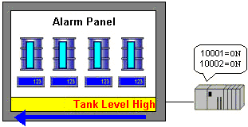
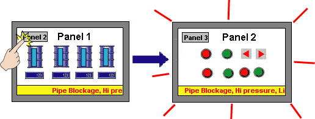
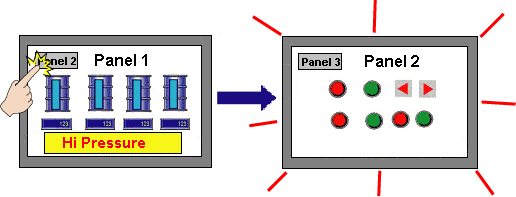
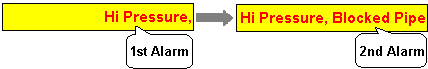
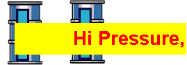

Single line alarm banner messages scroll from the right side of the panel to the left side of the panel. Double line alarm banner messages remain fixed on the screen without scrolling.

Alarm banner are supported for all targets, with the exception of targets with a 200x80 panel size.
You can display alarm banner messages using Global display and Local display. Global display allows you to display alarm messages in all panels, and Local display allows you to display only on a specific panel. You can use Global display and Local display at the same time.
Use Global display to show alarm banner messages on all panels.

Use Local display to show alarm banner messages on a specific panel.

When Multiple alarms with the same severity are triggered at the same time, they display in the order they were triggered.

Scrolling alarm banner messages are displayed on top, so system windows and objects are beneath the alarm banner.

When touch objects are beneath alarm banner messages, those beneath Global display become inactive — only those beneath Local displays remain active.

You can only set up one global alarm banner in a project.
When you create an alarm banner, you need to ensure the number of alarms displayed on the alarm banner are kept to a minimum (less than 20) and to display only the important alarms. Too many alarms that need to be displayed on the alarm banner may result in a performance problem.
|
|
Global Display |
Local Display |
|
Setup |
In the Target properties, set alarm banner to Enabled. |
Drag and drop an alarm banner part from the Toolchest. |
|
Display |
Displays on all panels |
Displays on panel where alarm banner was dropped. |
|
Position |
You can choose from Top, Middle and Bottom. |
Anywhere on the panel. |
|
Size |
When an error window is displayed, the banner is displayed at the bottom of the error window and its height is 20 pixels. |
You can change the width and height of alarm banners dragged in from the Toolchest. If the font size is too big to fit, portions of letters may be cut-off. |